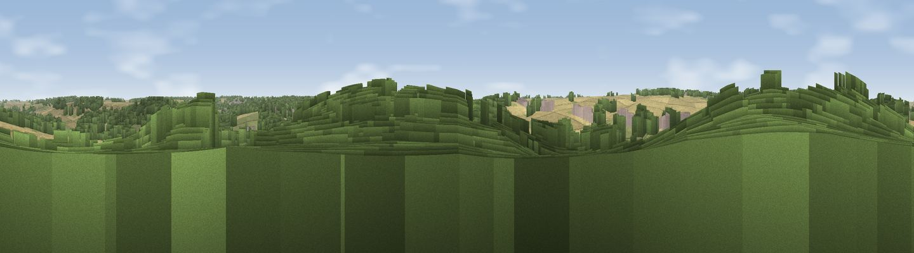

Viewpoint near Littlebury
#44576 in England · top 69% of its area beats it · near Littlebury · access?Where it is
The exact computed spot (TL 51525 38325). Click the marker for map links.
Public access: no public right of way or access land is recorded at this exact spot — it may be on private land. Computed from Natural England's CRoW access layer and OpenStreetMap rights of way — not the legal definitive map. Always verify locally.
The view, rendered

A 360° render of this exact spot computed from the terrain model, tree cover and land cover — summer colours, afternoon light, calibrated against photographs of famous viewpoints. Real trees, hedges and buildings will differ in detail.
The panorama
Grey silhouette: terrain skyline in each direction (720 bearings, Earth curvature and refraction included). Dashed green: skyline with trees (+15 m) and buildings (+8 m) as obstacles. Blue strip: how far the ground is visible on each bearing.
Where the view opens
Wedge length = distance to the farthest visible ground on that bearing (vegetation-aware). Rings at 10, 25 and 50 km.
What fills the view
45% cropland · 31% woodland · 21% grassland · 4% built-up
Angular shares of the visible panorama (visual magnitude), not map area. Landscape diversity 0.51 (0–1 Shannon).
Key numbers
More beautiful places nearby
The staircase of upgrades: each row has a higher view potential than everything closer. Driving times are estimates from straight-line distance, calibrated against real road routing — check an actual route before setting out.
| Place | Direction | Drive | Score |
|---|---|---|---|
| Neville Hill | S · 1 km | ~3 min | 18.1 |
| Heavy Hill | NNW · 3 km | ~7 min | 29.1 |
| Viewpoint near Ickleton | NNW · 4 km | ~10 min | 33.0 |
| Pepperton Hill | NW · 7 km | ~15 min | 42.7 |
| Viewpoint near Heydon | WNW · 9 km | ~18 min | 49.6 |
| Viewpoint near Stapleford | N · 15 km | ~27 min | 52.9 |
| Viewpoint near Royston | W · 17 km | ~30 min | 56.6 |
| Viewpoint near Hexton | W · 40 km | ~59 min | 65.4 |
52.02265, 0.20696 · source: screening · position refined by local search. Computed location — check access rights before visiting.